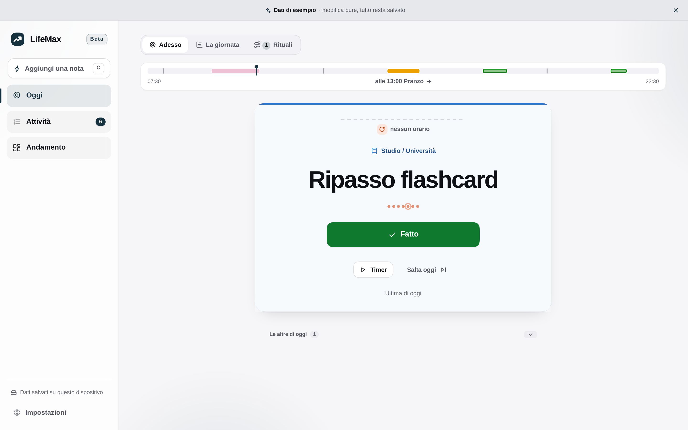
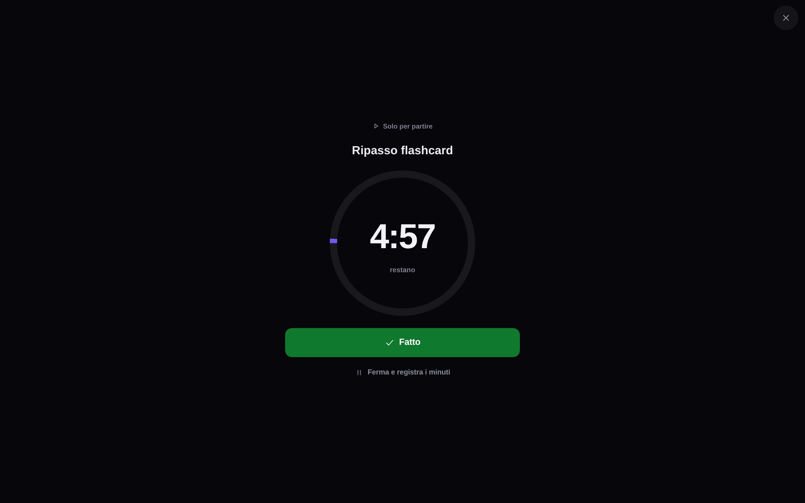
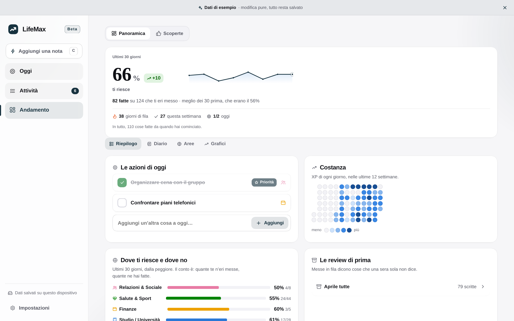

the most common AI design fingerprint
«La UI di questo sito è troppo AI slop»
— chi la usa
L'accento è inchiostro.
Niente gradiente.
Misurato, non sentito.



LifeMax
Misura. Ingegnerizza. Massimizza.
Anche su se stesso.